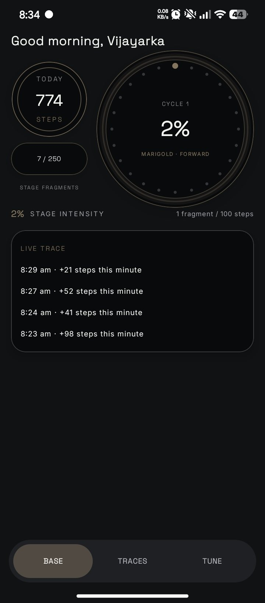
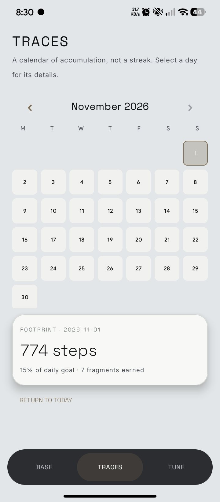
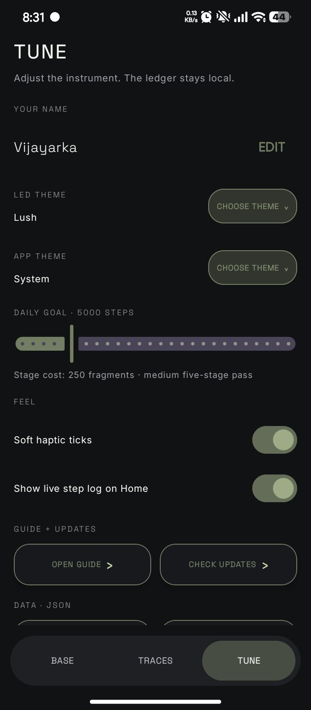
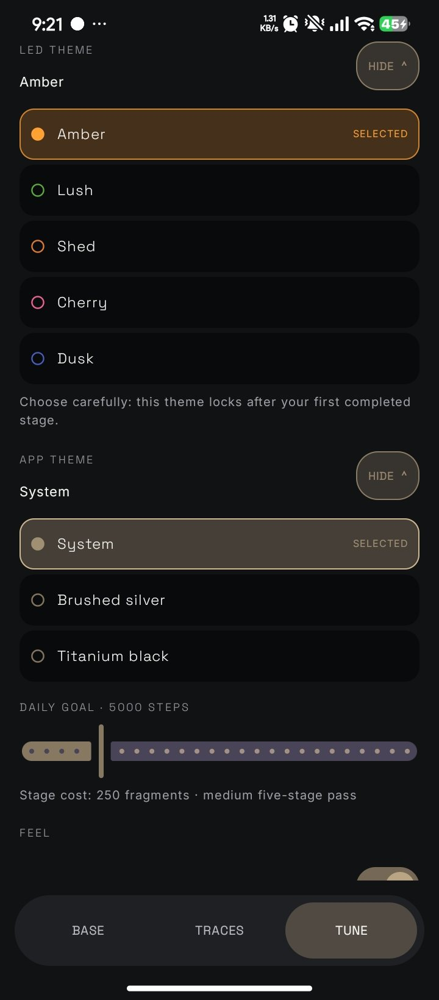

Start here
Setup asks for four things. Metabasis then uses the phone’s built-in motion sensors to read step movement.
Physical activity permission lets the app read step movement. It does not create an account or send your history anywhere.
The screens
Pick a screen, then tap a numbered marker on the phone or a line in the list.




- Today. Steps recorded since midnight, inside the double ring.
- Cycle ring. Percent through the current stage, with the stage name and direction, such as MARIGOLD · FORWARD. The 24 dots mark progress.
- Stage fragments. The capsule counts fragments toward 250 for this stage. Every 100 new steps adds one.
- Stage intensity. The same progress as a percent, beside the fragment rate: 1 fragment per 100 steps.
- Live trace. Recent minutes with the steps added, like “8:29 am · +21 steps this minute”. Hide it in Tune.
- Navigation. Base, Traces and Tune. The active pill takes the color of your LED theme.
- Not a streak. Traces is a calendar of accumulation. Skipped days carry no penalty.
- Month header. Use the arrows to move between months. Days run Monday to Sunday.
- Selected day. Today starts selected. Tap any other day to see its details.
- Footprint card. Shows the date, steps, percent of your daily goal and fragments earned, for example “774 steps · 15% of daily goal · 7 fragments earned”.
- Return to today. Jumps back to the current day after you browse.
- Your name. Shown in the Base greeting. Choose Edit to change it.
- LED theme. Colors the ring, stages and the active navigation pill. See the Themes tab.
- App theme. System, Brushed silver or Titanium black. The Traces screenshot shows a light finish.
- Daily goal. Slide to change it. The line below shows what a stage costs, for example 250 fragments for a medium five-stage pass.
- Feel. Soft haptic ticks, and whether the live step log shows on Home.
- Guide + Updates. Open this guide or check for a new version.
- Data · JSON. Scroll down for export and import, covered below.
- LED theme. Choose Choose theme to open the list, and Hide to close it.
- Selected. The current theme is outlined and tagged SELECTED. Here it is Amber.
- Five LEDs. Amber, Lush, Shed, Cherry and Dusk. Each has its own color ring.
- The lock. “Choose carefully: this theme locks after your first completed stage.”
- App theme. Opens the finish list the same way.
- Three finishes. System follows your phone. Brushed silver and Titanium black set a light or dark look yourself.
- Daily goal. The slider sits right below, with the stage cost line.
Try the five LEDs
These switch this guide too, the same way Tune switches the app.
Fragments, stages, passes, cycles
Four words describe the whole journey. Each one contains the one before it.
At 5,000 steps a day you earn about 50 fragments, so a stage takes around five days. The Cycle ring on Base always shows where you are inside the current stage.
Your data
Metabasis stores settings and history in app-private storage. There is no account, analytics, advertising SDK, Health Connect dependency, or internet permission.
Back up and restore
Open Tune, scroll to Data · JSON, and choose Export to save a local copy. Choose Import to restore one.
When tracking stops
Open Base and read the status text. Then check the cause below.
Status says “Setup”
Physical activity permission is missing. Choose Setup and allow it.
The phone has no compatible sensor
The app labels the fallback or limitation on screen. Read that label to see what it can count.
Steps stop in the background
Battery controls and force-stopping can interrupt background collection on some devices. Exclude Metabasis from aggressive battery saving, then reopen the app.
I can’t change my LED theme
The theme locks after your first completed stage, so every change belongs to one journey. Choose carefully the first time.
I switched phones
Export on the old phone, move the JSON file, then import it on the new one.
The live trace is missing
Turn on “Show live step log on Home” in Tune.
Download and help
Download the latest debug APK from GitHub Releases, or use the APK artifact from a successful Actions run. Debug builds may be unsigned, so Android can show a warning.
Alive UI
Alive UI is the design theory behind the instrument: keep structure trustworthy and let light, texture, and context change slowly. Visit Alive UI for the broader theory and prototypes.